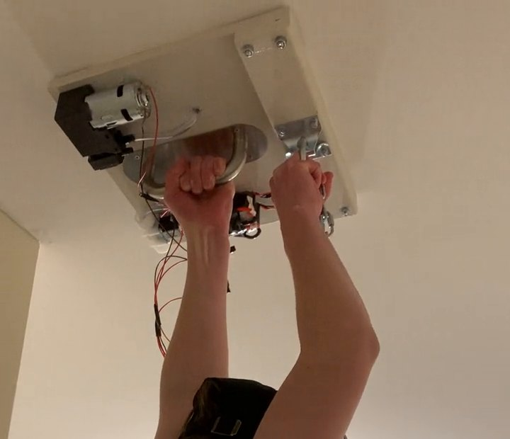
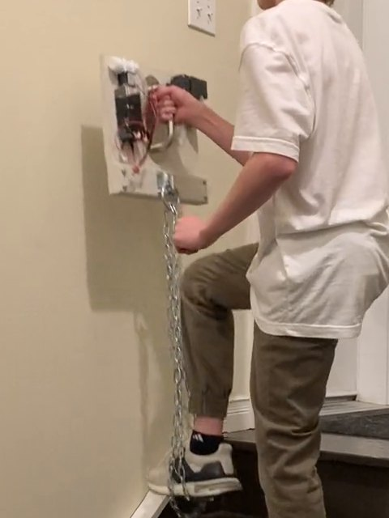
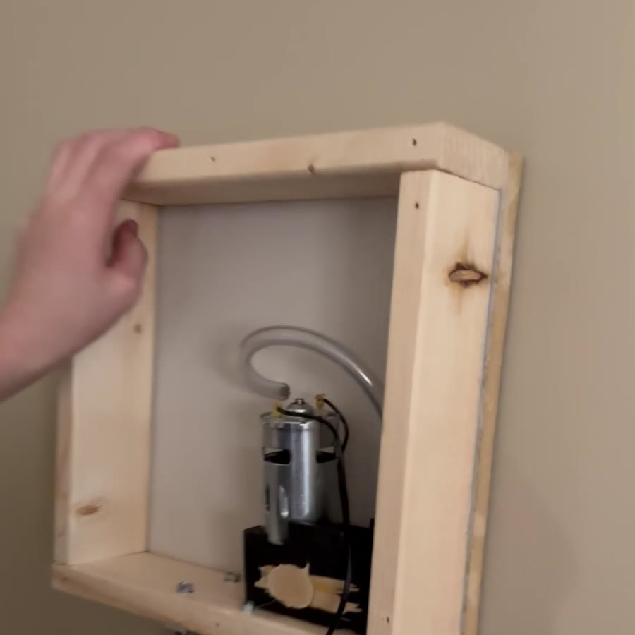
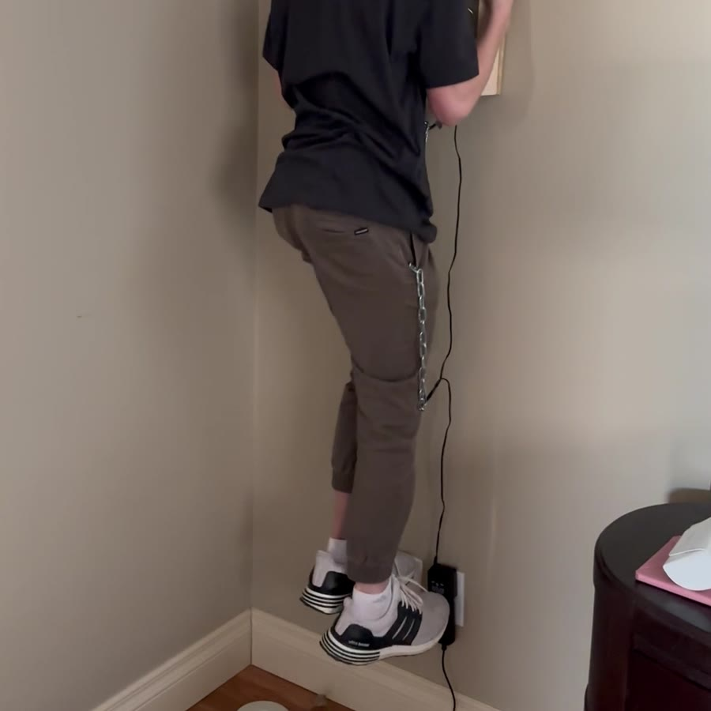
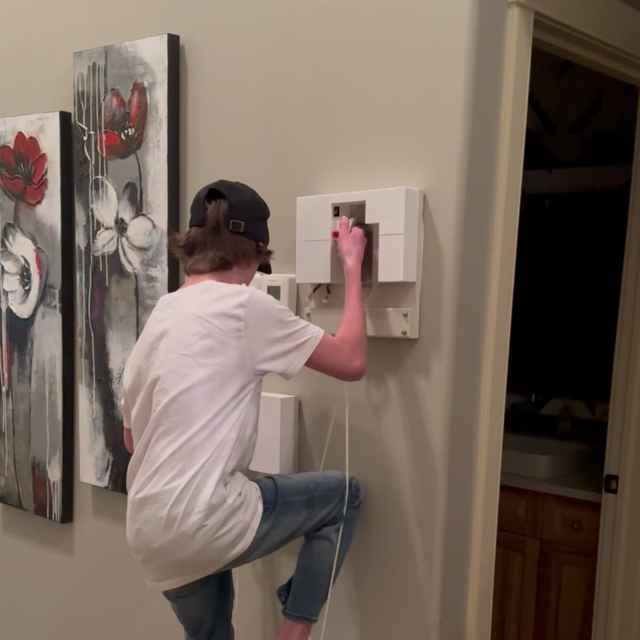

Suction Wall Climber
Two climbing units that hold onto a wall with motor-driven suction. My first prototypes were too small or didn’t hold strongly enough, so I scaled up the final units and improved the seal. I still have the wall climber, and it still works.
- Built
- 2023 · age 13
- Timeline
- Dec 2022 – Feb 2023
- Holds with
- Motor-driven suction
- Status
- Still working
The completed prototype
This is the completed prototype, filmed the day after I added foot pads and made my final adjustments.
- UnitA one-foot-square wooden box with a vacuum pump, a solenoid valve and an inch-thick window seal.
- HoldSuction holds a unit against the wall.
- ReleaseA switch releases it, so I can move that unit up and attach it again.
- RepeatThen I move the other unit.
I hold one unit in each hand by its grip and stand in the foot supports that hang below them on chains. To climb, I release one unit, lift it higher, let it seal again, step up, and then do the same with the other.
Could suction hold a person?
At about 11 I built web shooters that wound themselves back up after firing. Once that worked, I wanted a bigger challenge, and it turned into a question: could I build something that would let a person climb a wall?
The physics
A suction cup doesn’t actually pull on the wall. When air is removed from inside the cup, the pressure inside drops, and the air pressure outside pushes the cup against the surface. The bigger the pressure difference and the bigger the sealed area, the harder it’s pressed on.
On a vertical wall there’s a second part to it: a climber’s weight acts down along the wall, not straight away from it. What stops the cup sliding is friction between the seal and the wall, and that friction depends on how hard the cup is pressed on.
- Patm
- outside air pressure (≈101 kPa at sea level, lower at higher elevations)
- Pin
- pressure inside the cup
- A
- sealed area of the cup
- μ
- friction coefficient between seal and wall
- W
- load on that cup
With a sealed area about one foot square, even a partial vacuum presses the box against the wall with a lot of force. Rather than rely on a calculation, I found the limits by testing in stages, starting close to the ground.
Bigger units, better seal
Each final unit is a wooden box about one foot by one foot. Around the inside edge is a window seal about an inch thick, which presses against the wall and seals in the suction. A vacuum pump inside the box pulls the air out from behind it.
My first prototypes were too small or didn’t hold strongly enough. For the final version I increased the size and improved the seal. Following the physics above, a bigger sealed area gives more pressing force for the same drop in pressure, and a better seal lets the pump hold that pressure.
Each final unit uses a 24-volt vacuum pump, run from a plug-in power supply, which is why the units are connected by a cord.
Main components
Everything for one unit fits inside its wooden box: the vacuum pump, a solenoid valve, an on/off switch and a micro switch. A support for the user’s feet hangs below each box.
The on/off switch runs the pump. The micro switch works the release: pressing it opens the solenoid valve, letting air back into the box so the seal lets go and the unit can be moved. Letting go of it closes the valve so the unit can seal again. The one-foot size came from the prototypes: the smaller boxes didn’t hold strongly enough. It works on smooth, painted interior walls like the ones in the videos.
Here are the main components of each unit.
| Component | What it does |
|---|---|
| Wooden box, about 1 ft × 1 ft | Houses everything and forms the suction chamber |
| Window seal, about 1 in thick | Runs around the inside of the box and seals it against the wall |
| Vacuum pump | Pulls the air out from behind the box |
| Solenoid valve | Inside the box |
| On/off switch | Power |
| Micro switch | Control |
| Hand grip | Holding and moving the unit |
| Chain with foot support | Hangs below the unit to stand on |
With the cover off
Some of the test videos were filmed with the cover off, which shows what’s inside a unit: the vacuum pump, the wiring, the hand grip and the bracket the chain hangs from. The solenoid valve and switches are inside too.


Versions along the way
Earlier prototype · January 22, 2023
This earlier prototype used the same idea at a smaller size: an open wooden box with a small motor and pump inside and a clear hose. It was too small, so for the final units I increased the size and improved the seal.
I tested it the same way as everything else, close to the floor, and it didn’t hold strongly enough. Besides making the box bigger, the final units got a thick window seal, a closed cover, a proper hand grip and a chain with a foot support.



Testing the full-size units · February 1–6, 2023
I filmed short clips while building and testing the full-size units. Two of them were taken with the cover off, so you can see inside.
Each test added a bit more. On February 1 I tested a finished unit low on a stairwell wall, stepping into the chain with one foot while the other stayed on the stairs. On February 5 I repeated it with the cover off while I worked on the inside. On February 6 I stuck a unit to the ceiling and hung from it, with the floor right below me. Every test was done low, so I could step down if it let go.
Final changes · February 11–12, 2023
The last round of changes happened on the final day: I added foot pads and made final adjustments. The video at the top of this page shows the completed prototype the next day.
Between the small prototype on January 22 and the full-size units on February 1, I rebuilt the design at the larger size. After the February tests, the last changes were the foot pads and final adjustments.
What failed and what I changed
I tested in stages. First the small prototype close to the floor, then a full-size unit low on a wall with only part of my weight on it, then hanging my full weight from a unit on the ceiling, and only then a full climb.
The main failure was the first prototypes: they were too small or didn’t hold strongly enough. The fix was a bigger box and a better seal. The final round of changes added foot pads and fine-tuned the units before the full climb.
Safety considerations
Every test started close to the ground, so I could step down if a unit let go, and I only added weight or height once the step before had worked. The units depend on a good seal on a smooth surface and on power to the pumps. That’s why I haven’t published a holding capacity: it’s a personal experiment, not a product, and I’d need to measure it properly first.
The version that works
The final design uses two one-foot-square wooden boxes. Each one is sealed to the wall with an inch-thick window seal and has its own vacuum pump, solenoid valve, on/off switch and micro switch. They’re larger than my first prototypes and seal better. I still have the wall climber, and it still works.

What I took away from it
This project made the physics real. The size of the sealed area and the quality of the seal mattered more than anything else, which is exactly what the pressure-times-area formula says. It also taught me to test in small steps, low to the ground, before trusting a design with my full weight. If I built it again, I’d measure the holding force properly with weights before climbing.